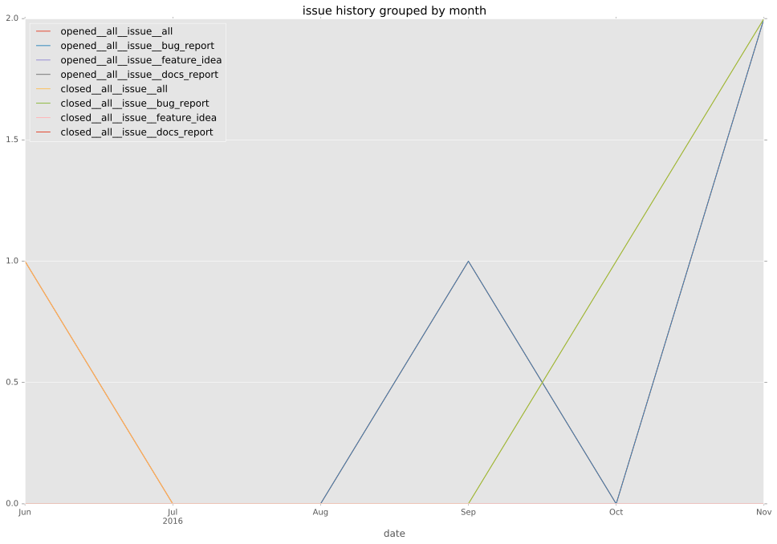
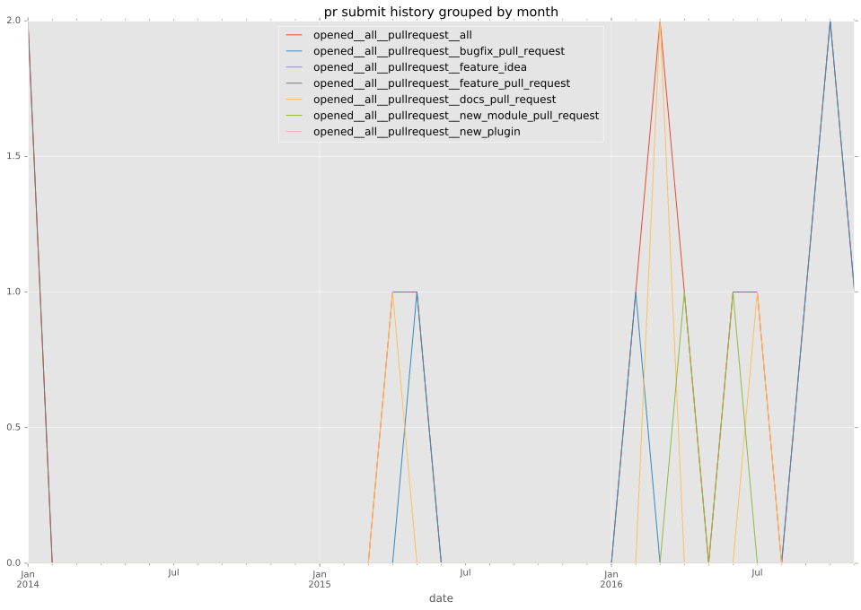
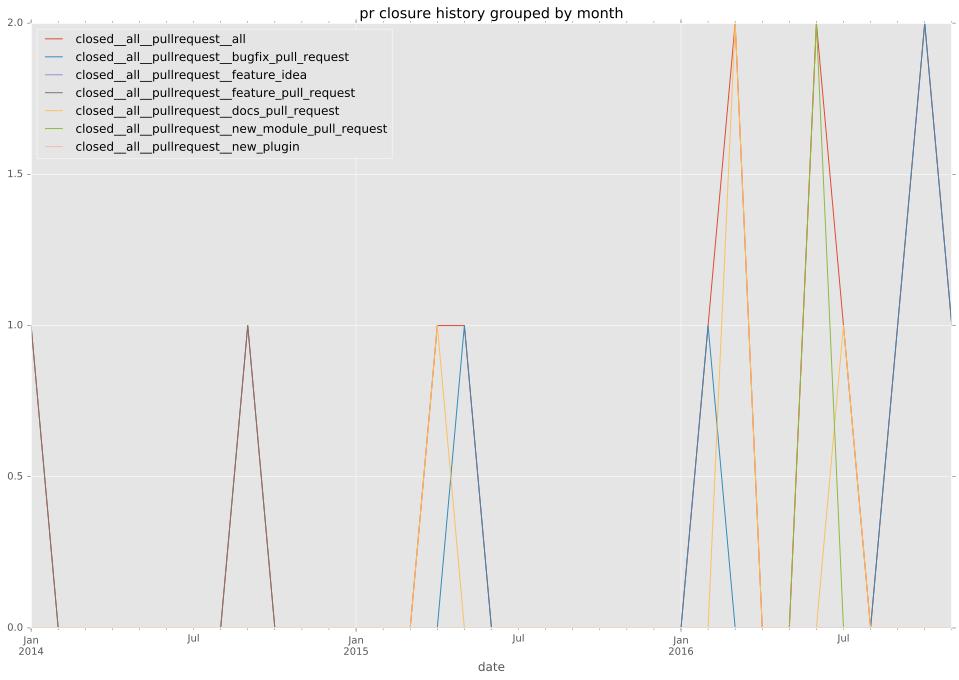

authors
- tmshn
maintainers
contributors
- tmshn : 32 commits
- alikins : 17 commits
- shotat : 4 commits
- nateprewitt : 3 commits
- mscherer : 3 commits
- abadger : 2 commits
- Jmainguy : 2 commits
total issue counts
feature pull request: 2
docs report: 1
pullrequest: 8
docs pull request: 2
bugfix pull request: 3
issue: 2
new plugin: 1
bug report: 1
issue history

pullrequest history


days open by issue type
bugfix pull request
count: 6
std: 2.06559111798
min: 0
max: 4
median: 0.0
mean: 1.33333333333
all
count: 16
std: 61.715712478
min: 0
max: 249
median: 2.0
mean: 17.8125
pullrequest
count: 0
std: nan
min: nan
max: nan
median: nan
mean: nan
docs pull request
count: 4
std: 1.15470053838
min: 0
max: 2
median: 1.0
mean: 1.0
docs report
count: 1
std: nan
min: 2
max: 2
median: 2.0
mean: 2.0
feature pull request
count: 2
std: 176.069588515
min: 0
max: 249
median: 124.5
mean: 124.5
issue
count: 0
std: nan
min: nan
max: nan
median: nan
mean: nan
new plugin
count: 2
std: 0.0
min: 8
max: 8
median: 8.0
mean: 8.0
bug report
count: 1
std: nan
min: 6
max: 6
median: 6.0
mean: 6.0
closures grouped by total days open